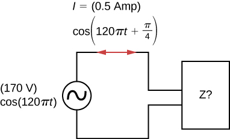

By the end of this section, you will be able to:
In the RLC series circuit of [link], the current amplitude is, from [link],
If we can vary the frequency of the ac generator while keeping the amplitude of its output voltage constant, then the current changes accordingly. A plot of versus is shown in [link].
In Oscillations, we encountered a similar graph where the amplitude of a damped harmonic oscillator was plotted against the angular frequency of a sinusoidal driving force (see Forced Oscillations). This similarity is more than just a coincidence, as shown earlier by the application of Kirchhoff’s loop rule to the circuit of [link]. This yields
or
where we substituted dq(t)/dt for i(t). A comparison of [link] and, from Oscillations, Damped Oscillations for damped harmonic motion clearly demonstrates that the driven RLC series circuit is the electrical analog of the driven damped harmonic oscillator.
The resonant frequency of the RLC circuit is the frequency at which the amplitude of the current is a maximum and the circuit would oscillate if not driven by a voltage source. By inspection, this corresponds to the angular frequency at which the impedance Z in [link] is a minimum, or when
and
This is the resonant angular frequency of the circuit. Substituting into [link], [link], and [link], we find that at resonance,
Therefore, at resonance, an RLC circuit is purely resistive, with the applied emf and current in phase.
What happens to the power at resonance? [link] tells us how the average power transferred from an ac generator to the RLC combination varies with frequency. In addition, reaches a maximum when Z, which depends on the frequency, is a minimum, that is, when Thus, at resonance, the average power output of the source in an RLC series circuit is a maximum. From [link], this maximum is
[link] is a typical plot of versus in the region of maximum power output. The bandwidth of the resonance peak is defined as the range of angular frequencies over which the average power is greater than one-half the maximum value of The sharpness of the peak is described by a dimensionless quantity known as the quality factor Q of the circuit. By definition,
where is the resonant angular frequency. A high Q indicates a sharp resonance peak. We can give Q in terms of the circuit parameters as
Resonant circuits are commonly used to pass or reject selected frequency ranges. This is done by adjusting the value of one of the elements and hence “tuning” the circuit to a particular resonant frequency. For example, in radios, the receiver is tuned to the desired station by adjusting the resonant frequency of its circuitry to match the frequency of the station. If the tuning circuit has a high Q, it will have a small bandwidth, so signals from other stations at frequencies even slightly different from the resonant frequency encounter a high impedance and are not passed by the circuit. Cell phones work in a similar fashion, communicating with signals of around 1 GHz that are tuned by an inductor-capacitor circuit. One of the most common applications of capacitors is their use in ac-timing circuits, based on attaining a resonant frequency. A metal detector also uses a shift in resonance frequency in detecting metals ([link]).
Resonance in an RLC Series Circuit(a) What is the resonant frequency of a circuit using the voltage and LRC values all wired in series from [link]? (b) If the ac generator is set to this frequency without changing the amplitude of the output voltage, what is the amplitude of the current?
Strategy The resonant frequency for a RLC circuit is calculated from [link], which comes from a balance between the reactances of the capacitor and the inductor. Since the circuit is at resonance, the impedance is equal to the resistor. Then, the peak current is calculated by the voltage divided by the resistance.
Solution
Significance If the circuit were not set to the resonant frequency, we would need the impedance of the entire circuit to calculate the current.
Power Transfer in an RLC Series Circuit at Resonance (a) What is the resonant angular frequency of an RLC circuit with and (b) If an ac source of constant amplitude 4.00 V is set to this frequency, what is the average power transferred to the circuit? (c) Determine Q and the bandwidth of this circuit.
Strategy The resonant angular frequency is calculated from [link]. The average power is calculated from the rms voltage and the resistance in the circuit. The quality factor is calculated from [link] and by knowing the resonant frequency. The bandwidth is calculated from [link] and by knowing the quality factor.
Solution
We then find for the bandwidth
Significance If a narrower bandwidth is desired, a lower resistance or higher inductance would help. However, a lower resistance increases the power transferred to the circuit, which may not be desirable, depending on the maximum power that could possibly be transferred.
Check Your Understanding In the circuit of [link], and (a) What is the resonant frequency? (b) What is the impedance of the circuit at resonance? (c) If the voltage amplitude is 10 V, what is i(t) at resonance? (d) The frequency of the AC generator is now changed to 200 Hz. Calculate the phase difference between the current and the emf of the generator.
a. 160 Hz; b. ; c. ; d. 0.023 rad
Check Your Understanding What happens to the resonant frequency of an RLC series circuit when the following quantities are increased by a factor of 4: (a) the capacitance, (b) the self-inductance, and (c) the resistance?
a. halved; b. halved; c. same
Check Your Understanding The resonant angular frequency of an RLC series circuit is An ac source operating at this frequency transfers an average power of to the circuit. The resistance of the circuit is Write an expression for the emf of the source.
(a) Calculate the resonant angular frequency of an RLC series circuit for which , , and (b) If R is changed to what happens to the resonant angular frequency?
The resonant frequency of an RLC series circuit is If the self-inductance in the circuit is 5.0 mH, what is the capacitance in the circuit?
(a) What is the resonant frequency of an RLC series circuit with , , and ? (b) What is the impedance of the circuit at resonance?
For an RLC series circuit, , , and (a) If an ac source of variable frequency is connected to the circuit, at what frequency is maximum power dissipated in the resistor? (b) What is the quality factor of the circuit?
a. 820 Hz; b. 7.8
An ac source of voltage amplitude 100 V and variable frequency f drives an RLC series circuit with , , and (a) Plot the current through the resistor as a function of the frequency f. (b) Use the plot to determine the resonant frequency of the circuit.
(a) What is the resonant frequency of a resistor, capacitor, and inductor connected in series if , and ? (b) If this combination is connected to a 100-V source operating at the resonant frequency, what is the power output of the source? (c) What is the Q of the circuit? (d) What is the bandwidth of the circuit?
a. 50 Hz; b. 50 W; c. 6.32; d. 50 rad/s
Suppose a coil has a self-inductance of 20.0 H and a resistance of . What (a) capacitance and (b) resistance must be connected in series with the coil to produce a circuit that has a resonant frequency of 100 Hz and a Q of 10?
An ac generator is connected to a device whose internal circuits are not known. We only know current and voltage outside the device, as shown below. Based on the information given, what can you infer about the electrical nature of the device and its power usage?
The reactance of the capacitor is larger than the reactance of the inductor because the current leads the voltage. The power usage is 30 W.